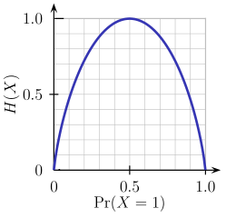
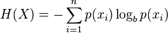

I am reading this book (NLTK) and it is confusing. Entropy is defined as:
Entropy is the sum of the probability of each label times the log
probability of that same label
How can I apply entropy and maximum entropy in terms of text mining? Can
someone give me a easy, simple example (visual)?
Answer
I assume entropy was mentioned in the context of building decision trees.
To illustrate, imagine the task of learning to classify first-names into
male/female groups. That is given a list of names each labeled with either m
or f, we want to learn a model that fits the data and can be used to predict
the gender of a new unseen first-name.
name gender
----------------- Now we want to predict
Ashley f the gender of "Amro" (my name)
Brian m
Caroline f
David m
First step is deciding what features of the data are relevant to the
target class we want to predict. Some example features include: first/last
letter, length, number of vowels, does it end with a vowel, etc.. So after
feature extraction, our data looks like:
# name ends-vowel num-vowels length gender
# ------------------------------------------------
Ashley 1 3 6 f
Brian 0 2 5 m
Caroline 1 4 8 f
David 0 2 5 m
The goal is to build a decision tree. An example of a tree would be:
length<7
| num-vowels<3: male
| num-vowels>=3
| | ends-vowel=1: female
| | ends-vowel=0: male
length>=7
| length=5: male
basically each node represent a test performed on a single attribute, and we
go left or right depending on the result of the test. We keep traversing the
tree until we reach a leaf node which contains the class prediction (m or
f)
So if we run the name Amro down this tree, we start by testing " is the
length <7?" and the answer is yes , so we go down that branch. Following
the branch, the next test " is the number of vowels <3?" again evaluates to
true. This leads to a leaf node labeled m, and thus the prediction is
male (which I happen to be, so the tree predicted the outcome correctly).
The decision tree is built in a top-down fashion, but the question is how do
you choose which attribute to split at each node? The answer is find the
feature that best splits the target class into the purest possible children
nodes (ie: nodes that don't contain a mix of both male and female, rather pure
nodes with only one class).
This measure of purity is called the information. It represents the
expected amount of information that would be needed to specify whether a new
instance (first-name) should be classified male or female, given the example
that reached the node. We calculate it based on the number of male and female
classes at the node.
Entropy on the other hand is a measure of impurity (the opposite). It is
defined for a binary class with values a/b as:
Entropy = - p(a)*log(p(a)) - p(b)*log(p(b))
This binary entropy function is depicted in the figure below (random variable
can take one of two values). It reaches its maximum when the probability is
p=1/2, meaning that p(X=a)=0.5 or similarlyp(X=b)=0.5 having a 50%/50%
chance of being either a or b (uncertainty is at a maximum). The entropy
function is at zero minimum when probability is p=1 or p=0 with complete
certainty (p(X=a)=1 or p(X=a)=0 respectively, latter implies p(X=b)=1).

Of course the definition of entropy can be generalized for a discrete random
variable X with N outcomes (not just two):

(thelog in the formula is usually taken as the logarithm to the base 2)
Back to our task of name classification, lets look at an example. Imagine at
some point during the process of constructing the tree, we were considering
the following split:
ends-vowel
[9m,5f] <--- the [..,..] notation represents the class
/ \ distribution of instances that reached a node
=1 =0
------- -------
[3m,4f] [6m,1f]
As you can see, before the split we had 9 males and 5 females, i.e.
P(m)=9/14 and P(f)=5/14. According to the definition of entropy:
Entropy_before = - (5/14)*log2(5/14) - (9/14)*log2(9/14) = 0.9403
Next we compare it with the entropy computed after considering the split by
looking at two child branches. In the left branch of ends-vowel=1, we have:
Entropy_left = - (3/7)*log2(3/7) - (4/7)*log2(4/7) = 0.9852
and the right branch of ends-vowel=0, we have:
Entropy_right = - (6/7)*log2(6/7) - (1/7)*log2(1/7) = 0.5917
We combine the left/right entropies using the number of instances down each
branch as weight factor (7 instances went left, and 7 instances went right),
and get the final entropy after the split:
Entropy_after = 7/14*Entropy_left + 7/14*Entropy_right = 0.7885
Now by comparing the entropy before and after the split, we obtain a measure
of information gain , or how much information we gained by doing the split
using that particular feature:
Information_Gain = Entropy_before - Entropy_after = 0.1518
You can interpret the above calculation as following: by doing the split with
theend-vowels feature, we were able to reduce uncertainty in the sub-tree
prediction outcome by a small amount of 0.1518 (measured in bits as units of
information).
At each node of the tree, this calculation is performed for every feature, and
the feature with the largest information gain is chosen for the split in a
greedy manner (thus favoring features that produce pure splits with low
uncertainty/entropy). This process is applied recursively from the root-node
down, and stops when a leaf node contains instances all having the same class
(no need to split it further).
Note that I skipped over some details which are beyond the scope of this post,
including how to handle numeric features, missing values, overfitting and
pruning trees, etc..
Suggest
To begin with, it would be best to understand the measure of information.
How do we measure the information?
When something unlikely happens, we say it's a big news. Also, when we say
something predictable, it's not really interesting. So to quantify this
interesting-ness, the function should satisfy
- if the probability of the event is 1 (predictable), then the function gives 0
- if the probability of the event is close to 0, then the function should give high number
- if probability 0.5 events happens it give
one bit of information.
One natural measure that satisfy the constraints is
where p is the probability of the event X. And the unit is in bit, the
same bit computer uses. 0 or 1.
Example 1
Fair coin flip :
How much information can we get from one coin flip?
Answer : -log(p) = -log(1/2) = 1 (bit)
Example 2
If a meteor strikes the Earth tomorrow, p=2^{-22} then we can get 22 bits of
information.
If the Sun rises tomorrow, p ~ 1 then it is 0 bit of information.
Entropy
So if we take expectation on the interesting-ness of an event Y, then it
is the entropy. i.e. entropy is an expected value of the interesting-ness of
an event.
More formally, the entropy is the expected number of bits of an event.
Example
Y = 1 : an event X occurs with probability p
Y = 0 : an event X does not occur with probability 1-p
H(Y) = E[I(Y)] = p I(Y==1) + (1-p) I(Y==0)
= - p log p - (1-p) log (1-p)
Log base 2 for all log.